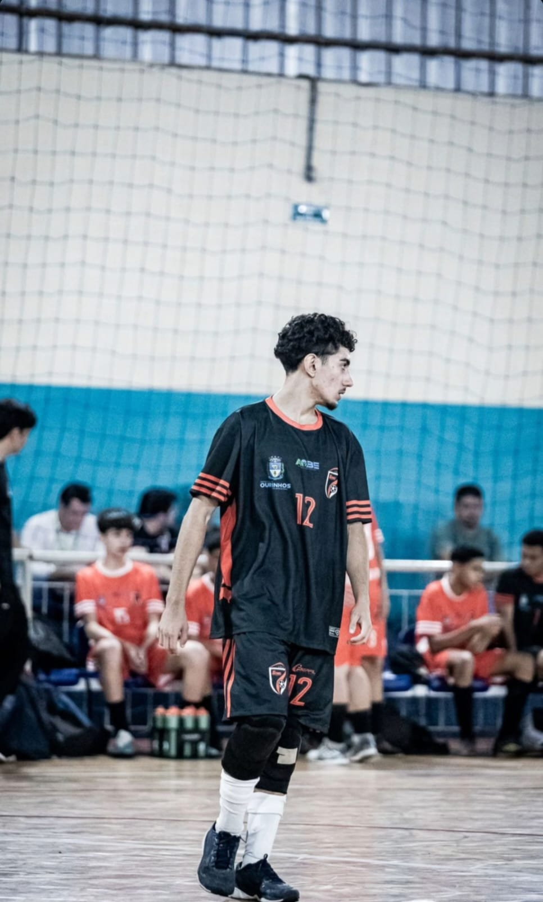

Paulo Henrique
Sou Paulo Henrique Moraes Oliveira, estudante do Ensino Médio na ETEC.
Tenho grande interesse na área de tecnologia e já possuo conhecimentos em PHP, CSS, HTML e JavaScript. Gosto de estudar e me dedicar aos meus objetivos, sempre buscando aprender coisas novas e me aprimorar.
Sou uma pessoa empenhada e determinada, com disciplina tanto nos estudos quanto na vida pessoal. Além da área de tecnologia, tenho paixão por futebol e esportes em geral, que me ajudam a manter o equilíbrio e o trabalho em equipe.
Tenho grande interesse na área de tecnologia e já possuo conhecimentos em PHP, CSS, HTML e JavaScript. Gosto de estudar e me dedicar aos meus objetivos, sempre buscando aprender coisas novas e me aprimorar.
Sou uma pessoa empenhada e determinada, com disciplina tanto nos estudos quanto na vida pessoal. Além da área de tecnologia, tenho paixão por futebol e esportes em geral, que me ajudam a manter o equilíbrio e o trabalho em equipe.
Lucas Spiller
Lucas Spiller é estudante do Ensino Médio na ETEC e gosta de resolver problemas com programação.
Tem interesse em tecnologia e domina PHP, CSS, HTML e JavaScript. É dedicado aos estudos e sempre busca aprimorar seus conhecimentos. No tempo livre, gosta de praticar tênis de mesa, que ajuda a desenvolver concentração e trabalho em equipe.
Tem interesse em tecnologia e domina PHP, CSS, HTML e JavaScript. É dedicado aos estudos e sempre busca aprimorar seus conhecimentos. No tempo livre, gosta de praticar tênis de mesa, que ajuda a desenvolver concentração e trabalho em equipe.

Natan Vece
Natan Vece é estudante do Ensino Médio na ETEC e tem grande interesse pela área de tecnologia, com conhecimentos em PHP, CSS, HTML e JavaScript.
Sempre busca aprender coisas novas e se aprimorar, sendo disciplinado e dedicado nos estudos e na vida pessoal. Também gosta de esportes, que considera essenciais para o equilíbrio e o trabalho em equipe.
Sempre busca aprender coisas novas e se aprimorar, sendo disciplinado e dedicado nos estudos e na vida pessoal. Também gosta de esportes, que considera essenciais para o equilíbrio e o trabalho em equipe.
Victor Valentin
Victor Valentin é estudante do Ensino Médio na ETEC, apaixonado por tecnologia e sempre buscando evoluir em programação.
É disciplinado e dedicado, gosta de estudar e se aprimorar. No tempo livre, pratica academia, futebol e vôlei, esportes que ajudam a manter o equilíbrio e o espírito de equipe. Também possui conhecimentos em PHP, CSS, HTML e JavaScript.
É disciplinado e dedicado, gosta de estudar e se aprimorar. No tempo livre, pratica academia, futebol e vôlei, esportes que ajudam a manter o equilíbrio e o espírito de equipe. Também possui conhecimentos em PHP, CSS, HTML e JavaScript.